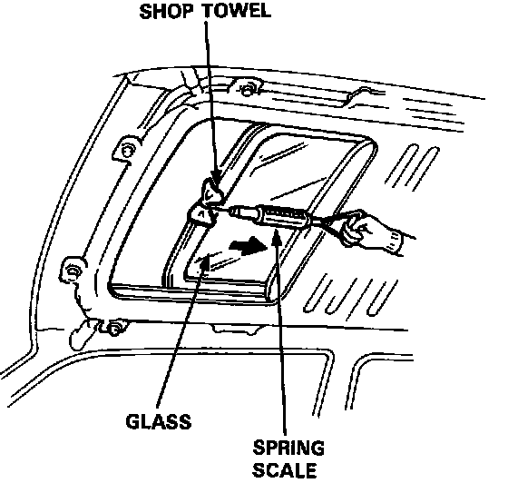

Opening Drag Check (Motor Removed)
Opening Drag Check (Motor Removed)
Before installing the motor, measure the effort required to open the glass using a spring scale as shown.
CAUTION: When using a spring scale, protect the leading edge of the glass with a shop towel.
If load is over 100 N (10 kg, 22 lbs), check side clearance and glass height adjustment.